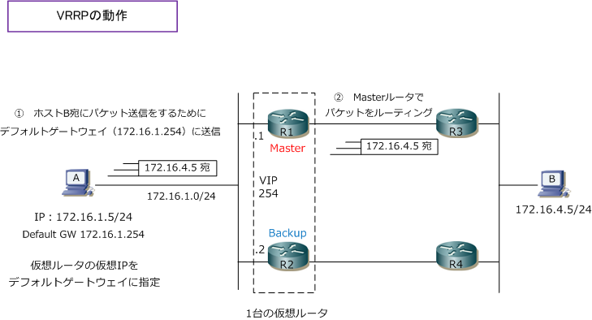
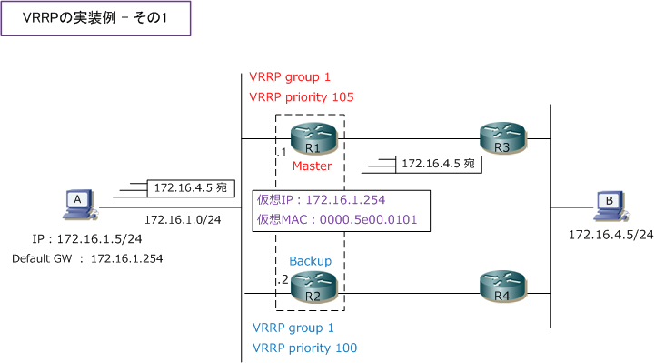
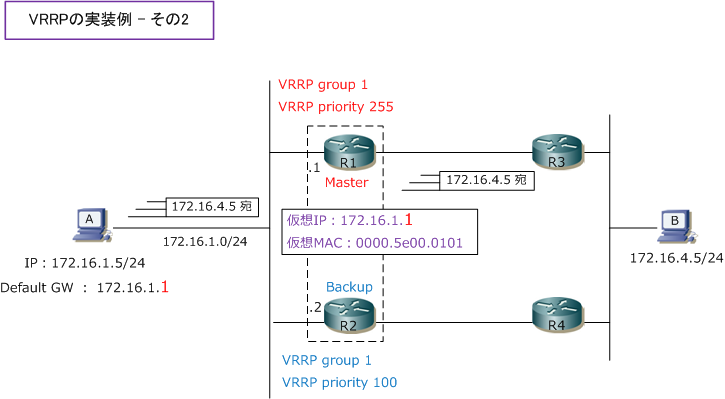
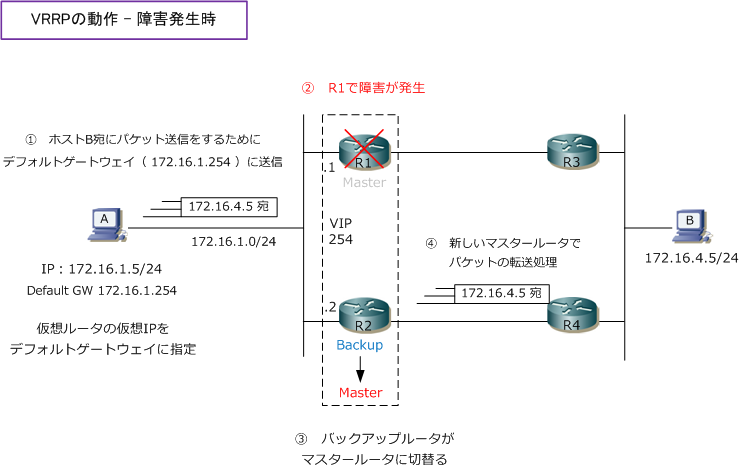

VRRP
VRRPとは
VRRP（ Virtual Router Redundancy Protocol ）は、デフォルトゲートウェイなどを冗長化するための RFC3768で標準化されたプロトコルです。VRRPは、デフォルトゲートウェイとなる Layer3 デバイスに IPアドレスとMACアドレスを共有させることができるので、PCなどの「デフォルトゲートウェイのパスを 冗長化」させることができます。VRRPはIETF標準プロトコルなのでマルチベンダー環境で実装できます。
VRRPを使用することで、物理的には2台あるルータが論理的（仮想的）には、1台のルータに見せられます。 VRID（Virtual Router Identifier）は同一リンク上の仮想ルータを識別する番号です。同じ仮想ルータに参加するルータは同じVRIDを設定します。IPv4の仮想MACアドレスの末尾1バイトにもVRIDが使われます。 下図で、R1とR2でVRRPを実装しています。ホストAのデフォルトゲートウェイのIPアドレスは、R1やR2の 物理IPアドレスではなく仮想IPアドレス（VIP）を指定する。ホストAからパケットを受信した仮想ルータは 物理的には「マスタールータ」と呼ばれるルータ（下図ではR1）で、パケット転送などの処理が行われます。

※ 上図の「ホストA」「R1」「R2」との接続、および「ホストB」「R3」「R4」との接続では、L2スイッチが使用されています。
HSRPと異なる点として、VRRPの場合は仮想IPアドレスに「物理IPアドレスとは別のIPアドレス」を設定 できるだけでなく、仮想IPアドレスに「マスタールータの物理IPアドレス」を指定することもできます。
また、マスタールータは定期的（1秒毎）にアドバタイズメント（HSRPでのHelloパケット）を送信するが、 バックアップルータはこのアドバタイズメントを一定時間内（3秒以内）に受信できなくなると、マスター ルータがダウンしたとみなして、バックアップルータがマスターに切り替わりパケット転送処理をします。
なお、VRRPではバックアップルータがアドバタイズメントをマスタールータに送信しないので、マスター ルータは現在のバックアップルータを認識することはできない仕様になっています。
| VRRP用語 | 解説 |
|---|---|
| 仮想IPアドレス（VIP） | Masterルータで保持されるIPアドレス。PCなどに設定するデフォルトゲートウェイのIPアドレス。 |
| 仮想MACアドレス | Masterルータで保持されるMACアドレス。PCなどのARPテーブルにキャッシュされるMACアドレス。 |
| 仮想ルータ | 仮想IPアドレスと仮想MACアドレスを持つ仮想のルータ。マスタールータとバックアップルータで構成。 |
| アドバタイズメント | VRRPを有効にしたルータ 間でVRRP情報をやり取りするマルチキャスト（224.0.0.18 IP番号112） |
| マスタールータ | 仮想IPアドレス(正確には仮想MAC)を宛先として転送されてきたパケットをルーティングするルータ。 |
| バックアップルータ | アクティブルータがダウンした場合に仮想IPアドレス(正確には仮想MAC)の制御を引き継ぐルータ。 |
| VRRPグループ | VRRPに参加し仮想ルータをエミュレートするルータの集合。通常、セグメントごとに1グループを作成。 |
| VRRPプライオリティ | アクティブかスタンバイになるかを決める値。高い値を持つルータがアクティブ。デフォルト値100。 |
| 仮想IPアドレスオーナー | 仮想IPアドレス（VIP）を持つVRRPルータのことだが、その仮想IPを自身の物理IPアドレスとして保持。 |
※ HSRPと同様に、プライオリティが同じ値である場合、インターフェースのIPアドレスが大きい方がマスタールータとなります。
VRRPの実装例
下図ではR1とR2のルータで同じVRRPグループ「1」としており、VRRPプライオリティ値がR1のルータが 大きいことから「R1がマスタールータ、R2がバックアップルータ」となっています。下図で、PCが異なる セグメントと通信する場合、デフォルトゲートウェイに指定した172.16.1.254にパケットが送信されるが、 そのARP応答はマスタールータが行うので、PCからのパケットはR1に送信されて、R1で転送処理されます。

上図のように、物理インターフェースに設定したIPアドレスとは異なるアドレスを仮想IPアドレスとして 設定できますが、VRRPを実装する場合、一般的にマスタールータにしたいルータの物理インターフェース のIPアドレスを仮想IPアドレスとして設定することが多い。Cisco機器では仮想IPに物理IPアドレスを使用 されたルータが自動的にマスタールータとなり、そのI/Fは自動的にプライオリティが「255」となります。

上図のどちらの構成においても、マスタールータの障害発生時のフローは以下の通りです。

VRRPの仮想MACアドレス
マスタールータがARP応答する際に通知する「仮想MACアドレス」は以下のように構成されています。 0000.5e00.01xx までの値は常に同じであり最後の1バイト（8ビット）はVRRPのグループ番号で値が 変わります。
・ VRRPグループが「01｣の場合は、仮想MACアドレスは「0000.5e00.0101」 ・ VRRPグループが「05｣の場合は、仮想MACアドレスは「0000.5e00.0105」 ・ VRRPグループが「10｣の場合は、仮想MACアドレスは「0000.5e00.010a」